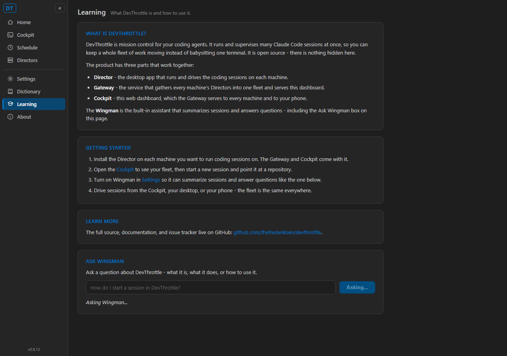
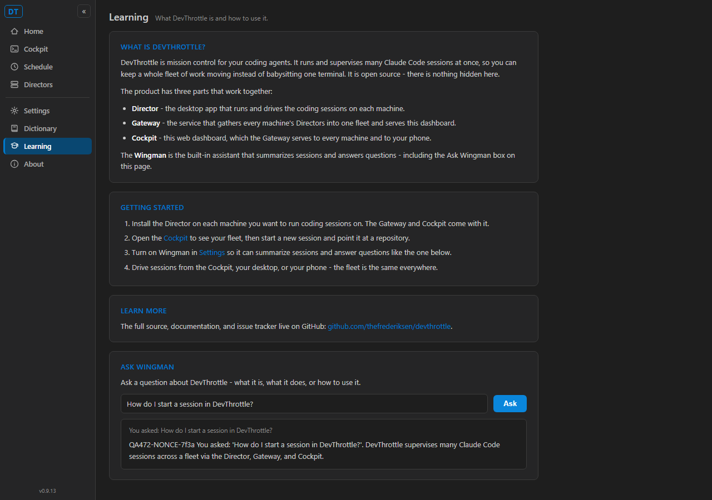
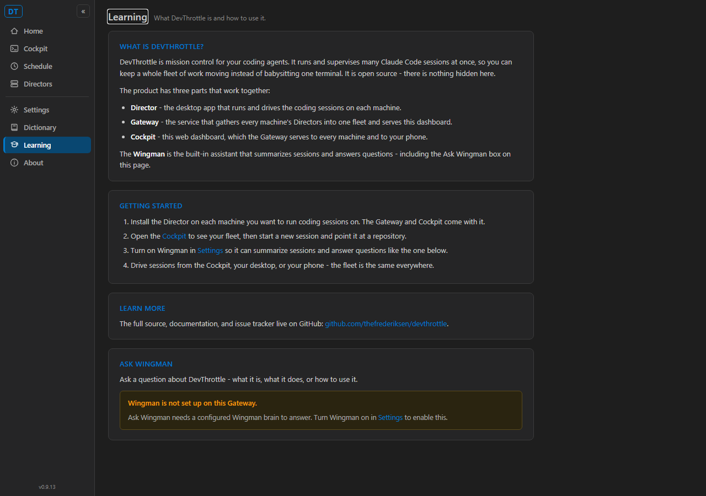

Verification method: the QA Agent built the PR branch in its own worktree
(D:\ReposFred\dt-472-qa), published the REAL Cockpit
(devthrottle-cockpit.dll - the actual Learning.razor + NavMenu.razor),
and drove it in headless Chromium against a QA-owned Gateway stub on QA-only ports
(Gateway 7889 / Cockpit 7481). The stub echoes the typed question and a unique QA nonce
(QA472-NONCE-7f3a) back inside the answer, so the rendered answer proves a real
Cockpit -> Gateway -> rendered-answer round trip rather than a page-baked constant. The real
Gateway endpoint and warm-brain translator are additionally covered by the passing .NET suites.
| # | Acceptance criterion | Expected | Actual | Result |
|---|---|---|---|---|
| 1 | "Learning" nav item in the rail navigates to the page without a full page reload (in-app NavLink) | Item visible in .nv rail; clicking changes URL to /learn with no document reload |
"Learning" item present and highlighted in the rail; NavLink click reached /learn, the window flag set before the click survived (no full reload) | PASS |
| 2 | Static overview + getting-started + outbound GitHub link | "What is DevThrottle", a getting-started section, a link to the GitHub repo | Overview, "Getting started" ordered list, and the link github.com/thefrederiksen/devthrottle all rendered | PASS |
| 3 | Ask Wingman input box + submit control | One text input and one submit button | Exactly one input.lrn-input and one button.lrn-submit ("Ask") | PASS |
| 4 | When Wingman available: question returns a non-empty answer with an in-progress indicator | "Asking..." indicator during the wait, then a rendered non-empty answer | Button flipped to "Asking..." + "Asking Wingman..." line shown; answer rendered containing the QA nonce and the echoed question, proving a live round trip | PASS |
| 5 | When Wingman NOT available: explicit set-up message, no empty box / hang / error | A named "set up Wingman" message; no ask input | "Wingman is not set up on this Gateway. ... Turn Wingman on in Settings to enable this." rendered; no input present | PASS |
| 6 | Ask path is Cockpit -> Gateway (never a Director directly) | The ask hits the Gateway POST /wingman/ask-devthrottle carrying the question |
Gateway log line [GatewayWingmanVoice] ask-devthrottle textLen=40 served the exact typed question; code review confirms Learning.razor injects only GatewayClient (no Director call) | PASS |
| 7 | Complies with VisualStyle.md (shared .nv rail + Cockpit page styling) |
Shared rail and dark theme consistent with existing Cockpit pages | Shared .nv rail beside Cockpit/Settings/Dictionary/About; component CSS reuses theme tokens (--sidebar, --border, --accent, --amber) | PASS |
dotnet build cc-director.sln - Build succeeded, 0 Warning(s), 0 Error(s).AskAboutDevThrottleAsync, BuildDevThrottlePrompt, AskDevThrottle_EmptyText_Returns400 tests).WingmanTranslator path); no architecture/security boundary change (Cockpit -> Gateway is the established pattern); explicit not-configured state honors the no-fallback rule; no secrets in the diff.



GET /gateway/wingman -> enabled=True
[GatewayWingmanVoice] ask-devthrottle textLen=40
[GatewayWingmanVoice] ask-devthrottle OK: answerLen=175, replySeconds=1.2
GET /gateway/wingman -> enabled=False